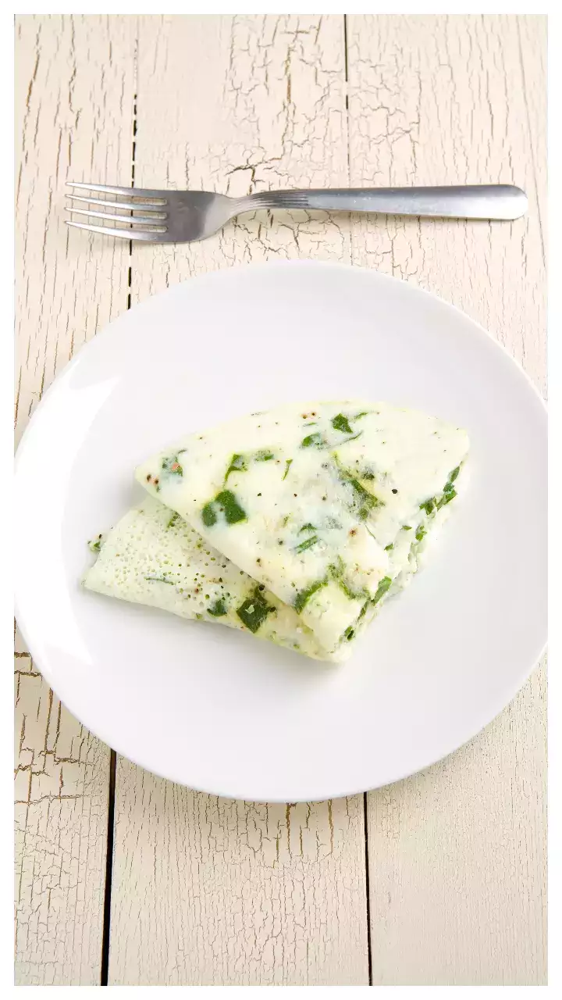

Anda Kari Patta ~ Jaggu Dada

Description
Eggs, curry leaves, and a variety of fragrant spices are used to make the viral recipe given by Jackie Shroff sir.
For those seeking a quick, simple meal that is yet delicious and filling, this dish is ideal.
The recipe has a distinct flavour that is likely to please your palate thanks to the distinct flavour of the curry leaves and chilly.
Ingredients
- 2 tbsp oil
- 2 egg whites
- 1 sprig of curry leaves
- 2 chopped green chillies
- 1/2 tsp black pepper
- salt as per taste
Steps To Make
- First, take a small bowl, break the eggs in the bowl, and only pour the egg whites in it. Then whisk the egg whites and set it aside.
- Now put some oil in a pan and add the curry leaves and chopped green chillies to it. Allow them to crackle.
- Add the tempering to the whisked egg whites.
- Now heat the pan and pour the egg mix into it. Sprinkle pepper and salt as per your taste and cook it evenly.
- Serve it hot with a paratha.